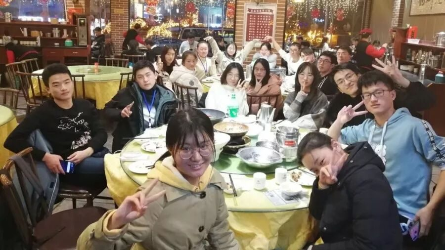
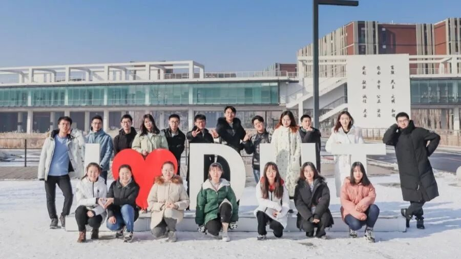
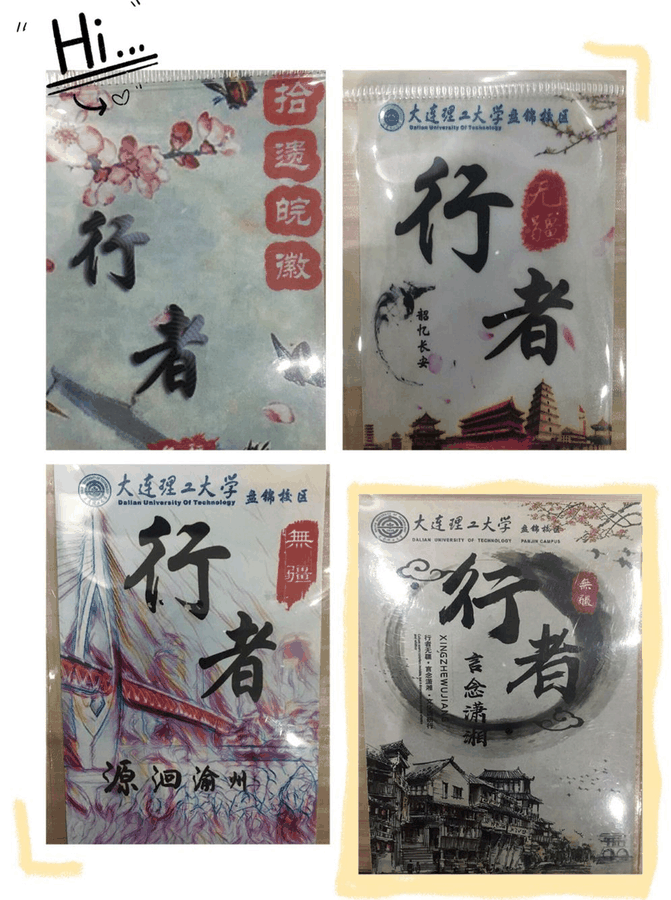
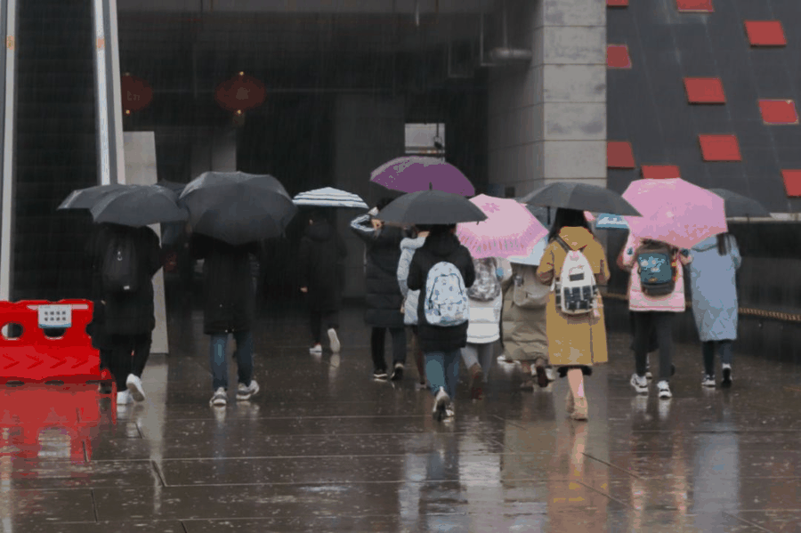
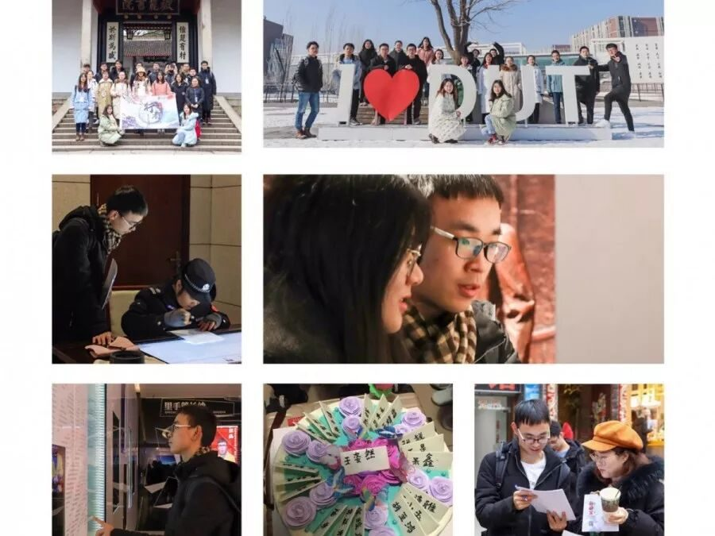
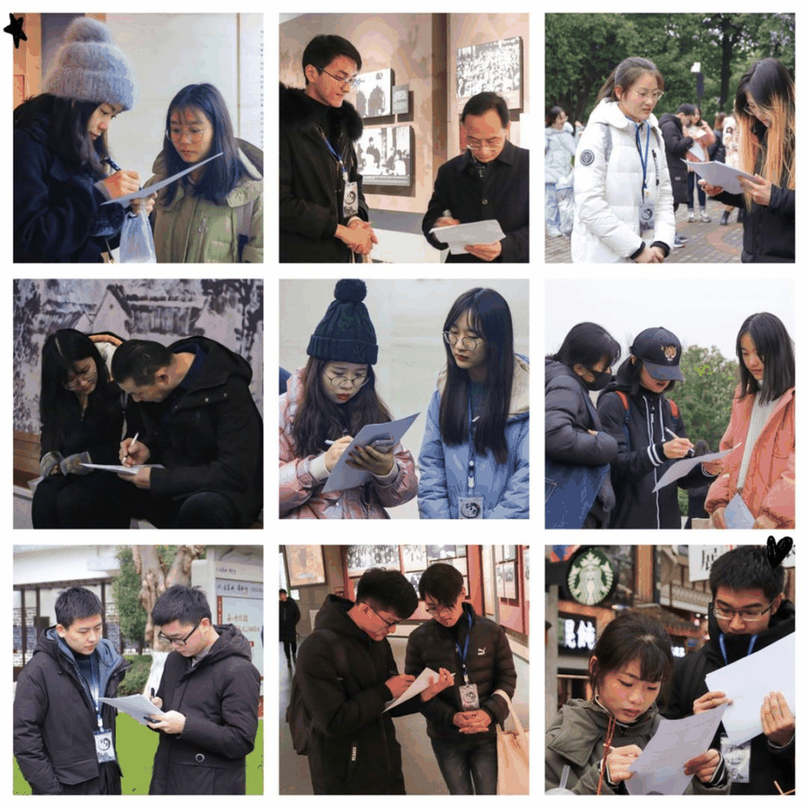
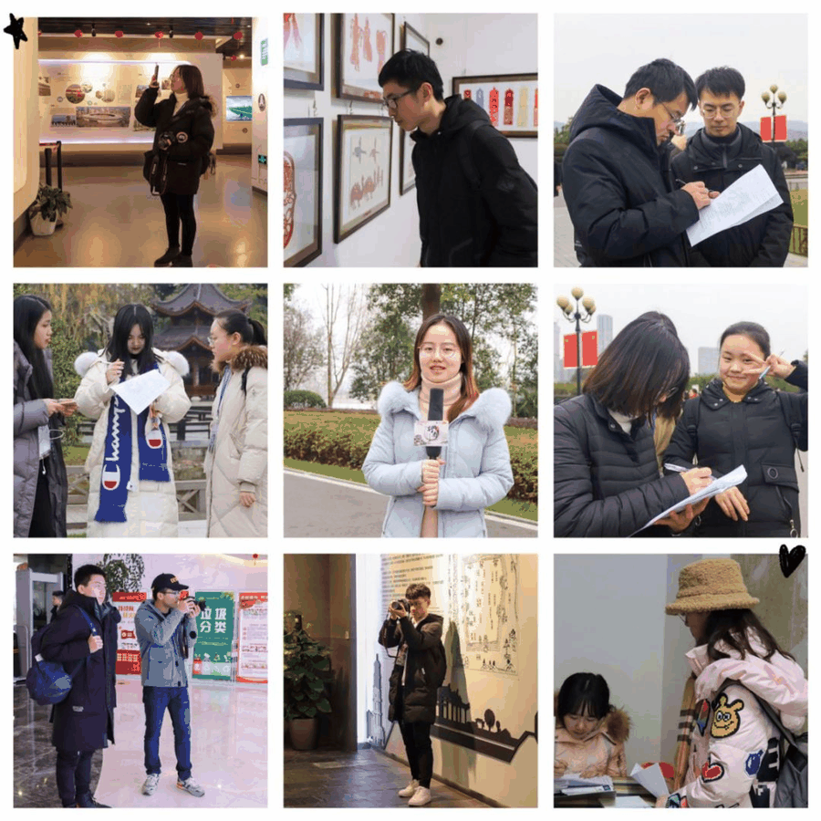

【赋墨沉湘·十八】我为你做的，远不及你所赠予我的。



我与行者共经历了两轮夏冬变换，四期相异的文化苦旅，在皖陕渝湘四地留下了自己的足迹。这一路走来，我收获太多太多。我沿途见识了地域的广阔，从北到南；品味了文化的内涵，人文寄思；结交了优秀的伙伴，善处且业精，还有那一段段美好的回忆……但惭愧地说，我觉得，我为它做的远不及它所赠予我的。


这期长沙之旅，并没有我想象中的那么顺利。南方的湿冷、多变的天气、来不久就遇见了大雨，早上躺在床上听着窗外雨声，竟也出现了一丝惰意，但还是得重整心情，背上行囊，和小伙伴们穿梭在大街小巷。我特别留恋在橘子洲头的那段时光，我们各成小队发放着问卷，脸上带着一丝胆怯却又充满热情，晚上我们步行穿梭橘子洲头，大家谈着自己的理想与收获；我也怀念在省博物馆的时光，认真看着马王堆汉墓的展品，品读它给我传递的信号，揭开千年前的神秘面纱；我也怀念拜访贾谊故居的时光，故居与街道相嵌，门庭内外如同两个天地，内静儒雅，参观采访，外闹繁杂，游客往来；我还想念那杯未喝完就被扔掉的茶颜悦色……

实话说，这期大家都挺辛苦的，各司其职，我就勉强给自己打个八十分吧，不仅是因为做了很多之前没有做过的事，还有真正参与到团队建设中来，当然这不是抱怨而是一份炫耀，因为队长信任我，团队相信我，我还记得为定住宿那天只吃上一顿饭，夜晚起床去查找火车的备选方案，考试当天也仍在与淘宝客服磋商价格，缺席会议想给小伙伴准备庆生惊喜，虽然每天的行程紧凑，任务也十分繁多，但毫无怨言，反而乐在其中，因为我真正参与到团队，也正是这样才明白了队长的不易，行者无疆要一直传承下去的初衷，就用答辩常说的话来讲，山河有界，行者无疆，我想正是因为有每位行者的辛苦付出，我们才能走的如此之远。

行者给予我的不仅有眼界的开阔，还有心扉的开阔，因为行者，我认识了一群优秀的小伙伴，队长智然虽憨但低调负责，日夜所思皆为团队。陶奇小姐姐稳如泰山，采访信手捏来。小可爱黄玲，工作严谨不躁，文字细思熟虑。小辉哥性格温尔，摄影修图兼攻。子健大佬，调研思路清晰有界，但问卷累累！还有锐哥，可谓大洼外交首席达人，艳虎虽然少言但宣传伸张有度，丝毫不虚，还有其他的小可爱们，就不一一列举，我只希望大家之后仍初心依旧，在脚踏四方之时，若再说起湖南，还能想起有这么一段渊源。



虽为文化苦旅，但我相信每个人感受更多的是快乐，我不知道行者无疆对于其他人是什么，但对于我来说，它就像我的家人一样，照顾帮助着我，真的非常感谢在大学期间有行者的陪伴，虽然我没有为你做些什么，但我一直会记的，我曾经也有个留恋的地方，名叫行者无疆！
来源 | 行者无疆实践团
文字 | 江新林
排版 | 吕丰元
审核 | 段智然 康艳虎 黄玲
行者无疆实践团
QQ：2758025831

随行者一起认识世界
长按二维码